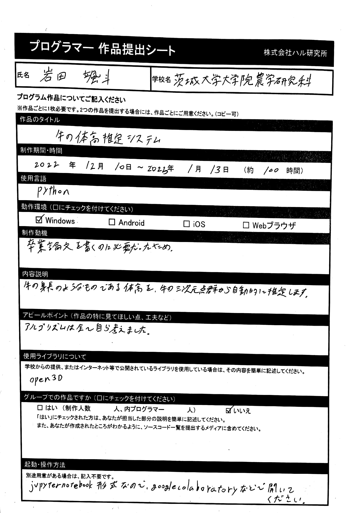

ようこそ岩田颯斗のポートフォリオサイトへ
制作物
解説
pythonにあるpygameというライブラリを使ってみたかったがために作った物
基本的なクッキークリッカーと同じで，最初はクリックして数を増やし，
ある程度溜まってきたら自動で増やす装置を購入する
たまに上から神様が降りてくるので，それをクリックするとフィーバーモードに入る
1兆個集めるとエンディングが見られる
ちなみに増やしているナスみたいな生物はウッホ君
神様の名前は怒奴我尾之神(ドヤガオのかみ)という名前である
想定プレイ時間・・・15分
使用言語・・・python
お借りしたもの・・・ipaexfont
実行ファイル，ソースコード・・・github
解説
卒業論文で作成したシステム
Azure Kinectという三次元計測機で撮影した和牛の点群から
和牛の身長のようなものである"体高"を推定することができる
想定プレイ時間・・・3分
使用言語・・・python
実行ファイル，ソースコード・・・github
※"cow_dataset"と"cow_taikou.ipynb"をお使いください
